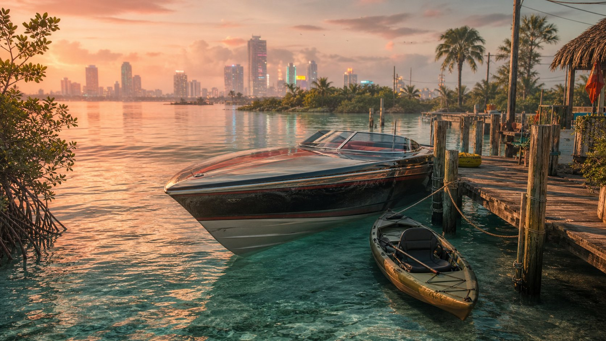
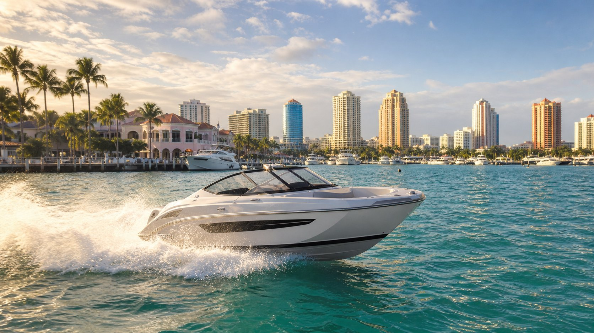
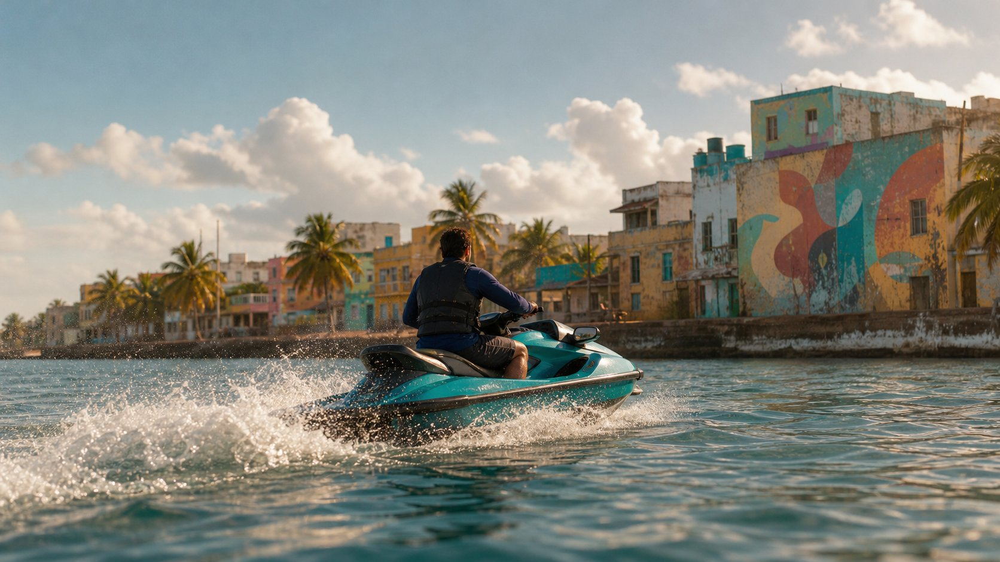

Shitzu Squalo
Nom écrit sur la page officielle d’édition. C’est une preuve du nom et du lien au pack, pas une preuve de vitesse de pointe, de classe compétitive ou d’exclusivité d’accès en jeu.

BATEAUX · NAVIGATION · SHITZU SQUALO & CREST KAYAK
Quelques noms sont écrits dans le contenu Rockstar; les reviews révèlent remorques, eau et itinéraires. Les listes communautaires restent séparées des faits publiés.
Rockstar nomme le Shitzu Squalo et le Crest Kayak dans le contenu de l’Ultimate Edition. Les trailers et captures montrent également des embarcations, mais leurs silhouettes ne suffisent pas toujours à établir le nom exact, la classe ou le statut jouable. L’IGN, après avoir joué, décrit des bateaux détaillés avec noms et équipements visuels variés, et rapporte qu’on peut mettre une embarcation sur remorque, la lancer puis la recharger.
Nom écrit sur la page officielle d’édition. C’est une preuve du nom et du lien au pack, pas une preuve de vitesse de pointe, de classe compétitive ou d’exclusivité d’accès en jeu.
Également nommé dans le contenu lié au Safehouse. La page d’édition ne détaille ni ses commandes ni les spots de lancement.
L’IGN rapporte une mécanique permettant de mettre un bateau sur remorque et de le remettre à l’eau. Le même test insiste sur la densité d’embarcations et la richesse des détails. Les gestes tactiques ci-dessous synthétisent ces observations, mais ne prétendent pas définir des vitesses ou des règles physiques.
| Affirmation | Source / statut | Limite |
|---|---|---|
| Shitzu Squalo & Crest Kayak | Noms dans le contenu Rockstar | Pas de statistiques officielles ni de roster complet. |
| Embarcations remorquables et rechargées sur remorque | Observation du reviewer IGN | Test presse, pas texte marketing Rockstar; conditions exactes à essayer en jeu. |
| Canaux, petites voies, marécages | Reviews décrivent une navigation dans les Keys et zones humides; les détails de pathfinding/autopilot varient. | Le reviewer Playday note que la navigation automatique sur l’eau peut peiner dans les passages étroits. |
| Ports, météo, ancre, personnalisation de bateaux | Demandes et spéculations communautaires | Souhaits de forum, pas confirmations gameplay. |
Illustrations éditoriales générées pour ce guide : elles ne sont pas des captures Rockstar et ne confirment ni l’apparence exacte d’un objet, ni un modèle ou des statistiques. Les noms mentionnés dans les légendes viennent séparément des sources textuelles citées.

La review Digital Spy du 18 novembre identifie un jet-ski SeaHawk dans une image de test. Le visuel affiché ici est une illustration éditoriale générée, pas la capture de Digital Spy; le nom rapporté n’établit ni les statistiques ni le nombre total de modèles.
